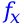

What are variables
Variables are just like numbers, they're handled as numbers.
The only difference is that their value can change.
Variables have a name, mostly this is a simple name like x.
But they can have any name you want, and more important: they can hold any value you want.
For example, if the variable x holds the value 5 then will 2*x be 10.
Variables can appear more than once in a calculation, for example: you have a variable secsInMinute, which is of course 60.
You can use: secsInMinute+secsInMinute/2 to calculate the number of seconds in 1.5 minutes.
More than 1 variable can appear in a calculation, so x*secsInMinute will calculate the number of seconds in x minutes.
In this example (where x is 5 and secsInMinute is 60) this will be 300.
At last: a variable can change of value.
So if you didn't want to calculate the number of seconds in 5 minutes, but the number of seconds in 1 hour you could type: x=60 (press Enter or Ok).
Then you clear the line and type x*secsInMinute which will result in 3600.
Of course it would be a lot faster if you only typed 60*60, but this was only an example.
Variables can be very handy with larger calculations, and more difficult numbers.
And they're handy to store a number temporarily or for a longer while, because Dalculator saves your variables and their values.
Note that variables are case sensitive in Dalculator!
And there are some rules for naming variables, see Naming variables and functions for more info.
Predefined variables
There are 2 variables predefined in Dalculator, these are pi and e. The variable pi is equal to the mathematical constant: π (which is in Dalculator: 3.141592653590). The variable e is equal to the mathematical constant e (which is in Dalculator: 2.718281828459). You can edit these variables like any other variable. If you've assigned a value to it, you can easily get it's original value back, just delete the variable and Dalculator will recreate it with it's original value.
What are functions
Functions are a short way to use some common formulas.
If you need to calculate the surface of a circle you could use pi*r^2
But it may be a formula you forget all the time, or sometimes a formula is too long to type over and over again.
That's where functions are for, in this case you could make a function called circle.
After creating this function you only need to type circle(r) and the surface of a circle with a radius of r will be calculated!
Functions always have a name (see: Naming variables and functions for more info), which is used to identify the function.
In the example the name was circle.
To use the function you should type it's name and then a opening bracket: circle(
Now you should type it's arguments, these are the values the function needs to do it's work.
In our example we only need to pass the radius of the circle: circle(r
After that you've to close the brackets: circle(r) and you're done!
Sometimes you need to pass more than 1 value to a function, for example by calculating the surface of a rectangle.
If you need to pass more than 1 value to a function, you seperate them with commas.
So if the function rect calculates the surface of a rectangle you should type: rect(width, height)
The space after the comma is optional.
Of course, using a function without arguments would be: function()
Predefined functions
There are some predefined functions in Dalculator.
Most of these functions take only 1 argument, and they are all in completely capital letters or completely lowercase letters.
You can't edit these functions but you can redefine them, by defining a function with the same name as you would define any other function.
If you want to restore the old function, you can just delete your own function.
For more info about defining and deleting functions, see Variables & functions dialog and Defining & editting functions.
Some functions require their argument in radians or degrees, and the result will also be in radians or degrees.
You can set Dalculator to radians or degrees by clicking Settings > Degrees or radians > Degrees or Settings > Degrees or radians > Radians in the menu.
The default setting is radians.
| Name* | What does it do |
| ABS | Returns the absolute value of the argument, which makes a positive value of any negative values. |
| ACOS | Returns the arc cosine of the argument. The result is in radians or degrees (deppending on the settings). In trigonometrics this is the inverse operation of cosine. |
| ASIN | Returns the arc sine of the argument. The result is in radians or degrees (deppending on the settings). In trigonometrics this is the inverse operation of sine. |
| ATAN | Returns the arc tangent of the argument. The result is in radians or degrees (deppending on the settings). In trigonometrics this is the inverse operation of tangent. |
| AVG | Returns the average of its arguments. |
| CEIL | Rounds up the argument. |
| COS | Returns the cosine of the argument. The argument should be in radians or degrees (deppending on the settings). |
| COSH | Returns the hyperbolic cosine of the argument. |
| DEG | Converts the argument (which should be in radians) to degrees. |
| EXP | Returns eargument where e is the mathematical constant e (which is in Dalculator: 2.718281828459) |
| FACULTY | Returns the faculty of the argument, so for instance FACULTY(3) = 3*2*1 = 6. |
| FLOOR | Rounds down the argument. |
| IF | Takes at least 2 arguments, if the first argument is not 0 the result will be the second argument. If the first argument is 0 and a third argument is specified, the result will be the third argument. If the first argument is 0 and no third argument is specified, the result is 0. |
| LOG | Returns the natural logarithm of the argument. |
| LOG10 | Returns the common (base-10) logarithm of the argument. |
| RAD | Converts the argument (which should be in degrees) to radians. |
| RAND | The result is a random number between 0 and 1 if no arguments are given. If 1 argument is given the result is a random integer from 0 to the arugment (including the argument). If 2 arguments are given, the result is a random integer between the first argument (included) and the second argument (included). |
| ROUND | Rounds the argument. |
| SIN | Returns the sine of the argument. The argument should be in radians or degrees (deppending on the settings). |
| SINH | Returns the hyperbolic sine of the argument. |
| TAN | Returns the tangent of the argument. The argument should be in radians or degrees (deppending on the settings). |
| TANH | Returns the hyperbolic tangent of the argument. |
* = Completely lowercase letters is also allowed, so abs is also allowed instead of ABS.
Naming variables & functions
When naming your variables or functions there are some restrictions. The name should start with an underscore (_) or a letter (lowercase or capital). After that you can use as many letters (lowercase or capital), underscores (_) or numbers as you want. Note that a number as first character of the name is not allowed! Remember, names are case sensitive. So myname is something else then myName! A variable and a function can have the same name, because the parentheses show whether it's a function or a variable. Two variables can't have the same name, also 2 functions can't have the same name. Some examples:
| Name | Allowed? | Why? |
| myname | Yes | - |
| myName | Yes | - |
| my name | No | Spaces are not allowed in names |
| my_name | Yes | - |
| mySecondName | Yes | - |
| my2ndName | Yes | - |
| 2ndName | No | A name may not start with a number |
| _2ndName | Yes | - |
| __ | Yes | - |
| my-name | No | An '-' isn't allowed in names |
| my(second)Name | No | '(' and ')' aren't allowed in names |
Variables & functions dialog
The variables and functions dialog can be used to edit variables and functions. Variables can also be editted by typing variable=value, but for deleting them you'll need this dialog. Functions can only be editted and deleted using this dialog. To open this dialog just click the -button, you'll find this button at the bottom left corner of the main window. When you clicked it you'll see a dialog: You've 3 tabs in this dialog where you can edit your variables and functions. On the page on the screenshot above you can edit your variables. Using the tabs above you can navigate to another page. On the page Functions you can edit your functions. On the last page you can delete variables and functions, select the variables and functions you want to delete and click Delete
Defining & editting functions
You can create new functions with the Variables & functions dialog. How to make them to something will be explained here. When you click Add function a new function will appear at the end of the list. You can rename it to whatever you want, as long as you follow the naming rules. The edit-box right to the name says by default ARG0+ARG1, this is what the function does. You can just type a calculation in that box, and that calculation will be done when you use the function. But functions can have arguments (see What are functions), you can also use arguments in your own functions. You can use ARGnumber-of-the-argument to use an argument. The amount of arguments will be determined by the ARG-variables in your function. So for example, function func contains: ARG0+ARG1, this function would need 2 arguments. When using this function, func(3, 4) would result in 7. Because ARG0 is 3 (in this example), and ARG1 is 4 (in this example). The function adds ARG1 to ARG0, so that's 3+4 = 7. Note that the first argument isn't named ARG1 but ARG0, so the counting starts at 0!